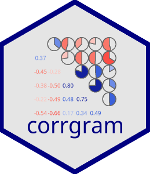
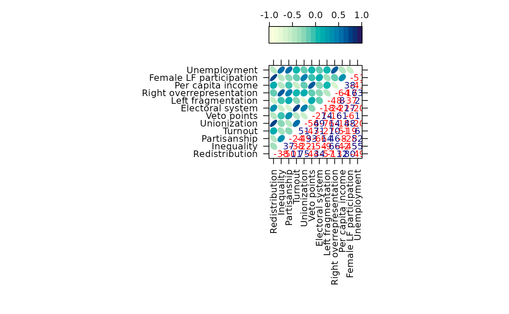
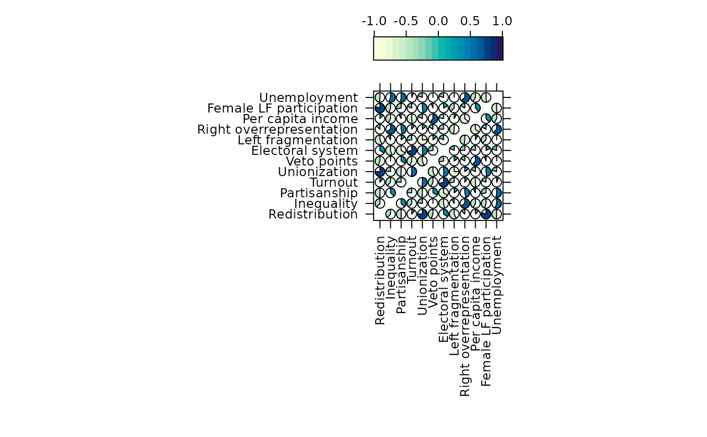

Panel functions for lattice corrgrams via levelplot
Source:R/corrgram_levelplot.R
levelplot.ellipse.RdThese functions provide custom panel methods for lattice::levelplot().
Usage
levelplot.ellipse(x, y, z, subscripts, at, level = 0.9, label = FALSE, ...)
levelplot.pie(x, y, z, subscripts, at = pretty(z), scale = 0.8, ...)Arguments
- x
Numeric coordinates from levelplot.
- y
Numeric coordinates from levelplot.
- z
Correlation values from levelplot.
- subscripts
Subscripts for lattice panel. (not used)
- at
Breaks for color levels.
- level
Confidence level for ellipse (default 0.9).
- label
Logical; if TRUE, show correlation values as text.
- ...
Additional arguments passed to panel functions.
- scale
Numeric; scaling factor for pie size (default 0.8).
Details
levelplot.ellipse Draws ellipses representing correlation coefficients
in the upper triangle of a matrix. Optionally adds numeric labels in the
lower triangle.
levelplot.pie Draws pie glyphs representing correlation coefficients,
omitting the diagonal.
Examples
library(lattice)
#>
#> Attaching package: ‘lattice’
#> The following object is masked from ‘package:corrgram’:
#>
#> panel.fill
levelplot(vote, at = do.breaks(c(-1.01, 1.01), 20),
xlab = NULL, ylab = NULL, colorkey = list(space = "top"),
scales = list(x = list(rot = 90)),
panel = levelplot.ellipse, label = TRUE)

levelplot(vote, at = do.breaks(c(-1.01, 1.01), 20),
xlab = NULL, ylab = NULL, colorkey = list(space = "top"),
scales = list(x = list(rot = 90)),
panel = levelplot.pie, label = TRUE)
